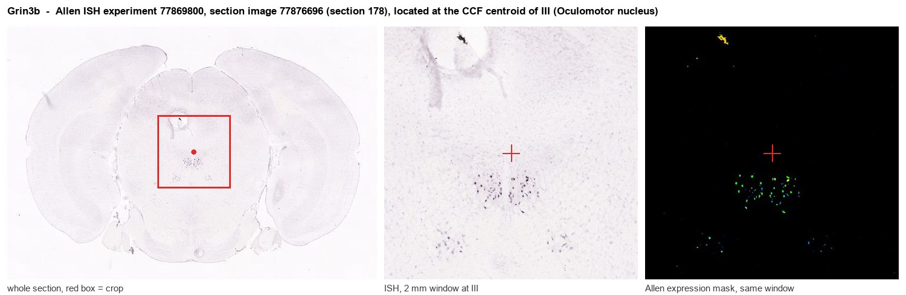

Grin3b
Glutamate receptor ionotropic, NMDA 3B (GluN3B) (N-methyl-D-aspartate receptor subunit NR3B) (NMDAR3B) (NR3B) (NMDA receptor 4) (Nr4)
Spatial tier: STRICT_EXCLUSIVE · Class: ION_CHANNEL · Top region: III (Oculomotor nucleus) · Positive regions: 10/554
45.8Discovery Score
41.6Targetability Score
CEvidence grade C
What this means: Grin3b: predicted fine-region profile is strict-exclusive, with 10 positive regions out of 554 (limit 12); direct spatial validation is required.
Function in III: evidence, prediction, innovation
- Gene function
- Grin3b encodes GluN3B (NR3B), a glycine-binding, non-conventional NMDA receptor subunit. When incorporated into GluN1/GluN2 receptors it acts in a dominant-negative fashion, reducing Ca2+ permeability and Mg2+ block; with GluN1 alone it can form excitatory glycine receptors that are insensitive to glutamate. Its expression is unusually restricted, being concentrated in somatic motoneurons.
- Region function
- The oculomotor nucleus contains the motoneurons for the medial, superior and inferior rectus, inferior oblique and levator palpebrae, plus the Edinger-Westphal preganglionic neurons, and executes conjugate eye movements, vergence and pupillary/accommodative control.
- Published in this region
- expression only Nishi et al. 2001 (J Neurosci) reported that NR3B is very restricted to somatic motoneurons of brainstem and spinal cord and explicitly noted weaker expression in oculomotor neurons (and Onuf's nucleus) than in classical somatic motor pools. Fukaya et al. 2005 (Eur J Neurosci) showed the NR2-to-NR3B switchover in somatic motoneurons between P10 and P21. Niemann et al. 2007 (Eur J Neurosci) reported the Grin3b knockout phenotype: mild motor coordination impairment, reduced home-cage activity, increased anxiety-like behaviour and altered social interaction. No study has examined oculomotor function specifically.
- Predicted function
- Prediction: GluN3B dampens NMDA receptor Ca2+ influx in oculomotor motoneurons, protecting these tonically high-firing cells from excitotoxic Ca2+ load while still allowing glutamatergic drive from premotor burst/tonic neurons. Its relatively low level in the oculomotor nucleus may partly explain the differential vulnerability of motor pools in ALS, where extraocular motoneurons are instead spared by other mechanisms. Knockout should increase NMDA-evoked Ca2+ transients and alter the neural-integrator gain, predicting subtle gaze-holding instability, nystagmus or vergence deficits detectable by high-speed eye tracking rather than gross ocular paralysis.
- Innovation
- ★★★★☆ 4/5 GluN3B is well studied as a motoneuron subunit but nobody has tested it in oculomotor circuits, where quantitative eye-movement readouts are available.
- Tools
- Grin3b knockout mice (Niemann et al. 2007); Chat-Cre and Isl1-Cre for cranial motoneurons; NMDA receptor pharmacology (MK-801, ifenprodil) and glycine-site ligands, with no GluN3B-selective drug available; anti-GluN3B antibodies used in the Nishi/Fukaya studies; Allen mouse ISH datasets 77869800 (coronal) and 536 (sagittal).
- References
Direct evidence located at the region

Allen ISH experiment 77869800, section image 77876696 (section 178): the section that contains the CCF centroid of Oculomotor nucleus according to the Allen image-to-atlas alignment (reference_to_image), with a 2 mm window around that point. Left: whole section, red box = window. Middle: ISH signal. Right: Allen's expression-mask view of the same window. open this image in the Allen viewer
Look it up yourself: Allen Mouse Brain ISH for Grin3bAllen reference atlas: III (structure 35)ABC Atlas MERFISH viewer(in the ABC Atlas choose dataset MERFISH-C57BL6J-638850-CCF, colour cells by gene "Grin3b" or by parcellation_substructure "III")All genes confined to III + 3-D brain
Direct spatial evidence
MERFISH REGION LOCATOR

DIRECT ALLEN ISH

DIRECT ALLEN ISH

Regional expression figure

Predicted WMB × fine-CCF profile; not direct full-transcriptome spatial measurement.
Spatial profile
Evidence and specificity
- Evidence status
- PREDICTED_FINE
- Direct sources
- None; predicted localization only
- Exclusive threshold
- 12 positive regions out of 554
- Spatial specificity
- 0.387
- Top-region fraction
- 0.105
- Filter status
- PASS
Interpretation limits
- Cell-type-to-region projection is imputed expression, not direct spatial measurement.
- Adult reference atlases do not establish stability across age, sex, strain, state, or disease.
- Transcript abundance does not guarantee protein abundance or genetic-tool performance.